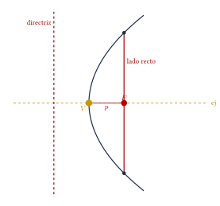
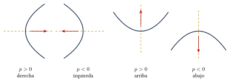
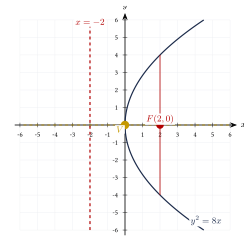

Capítulo 34
Parábola
UNAMIPNCENEVAL
La parábola es una sección cónica definida mediante un foco y una directriz. Para resolver ejercicios es importante reconocer su orientación, identificar el parámetro \(p\) y calcular el vértice, el foco, la directriz, el eje focal y el lado recto.
34.1 Definición y elementos#
La parábola es el conjunto de puntos del plano que se encuentran a la misma distancia de un punto fijo, llamado foco, y de una recta fija, llamada directriz:
Sus elementos principales son:
- Vértice \(V\): punto donde inicia la abertura.
- Foco \(F\): punto fijo situado dentro de la parábola.
- Directriz: recta situada frente a la abertura.
- Eje focal: eje de simetría que pasa por \(V\) y \(F\).
- Parámetro \(p\): número que determina la orientación y la distancia entre el vértice y el foco.
- Lado recto: cuerda que pasa por el foco y es perpendicular al eje focal.
Las relaciones fundamentales son:
y:

34.2 Formas ordinarias#
34.2.1 Parábola horizontal#
- Si \(p>0\), abre hacia la derecha.
- Si \(p<0\), abre hacia la izquierda.
34.2.2 Parábola vertical#
- Si \(p>0\), abre hacia arriba.
- Si \(p<0\), abre hacia abajo.
La variable elevada al cuadrado determina la orientación del eje:

El coeficiente que aparece en la ecuación es \(4p\), no \(p\).
Por ejemplo, si:
entonces:
34.3 Vértice en el origen#
Cuando:
se utilizan las formas:
y:
Encuentra los elementos de:
Ver solución
Comparamos con:
Entonces:
Como \(p>0\), abre hacia la derecha.

Encuentra los elementos de:
Ver solución
Comparamos con:
Entonces:
Como \(p<0\), abre hacia abajo.
34.4 Vértice fuera del origen#
Encuentra la ecuación de la parábola con:
Ver solución
El vértice y el foco tienen la misma coordenada \(x\). Por tanto, la parábola es vertical.
Como \(p>0\), abre hacia arriba.
Sustituimos:
Sus elementos son:

Encuentra la ecuación de la parábola con:
Ver solución
El vértice y el foco tienen la misma coordenada \(y\). Por tanto, la parábola es horizontal.
Como \(p>0\), abre hacia la derecha.
Sustituimos:
Sus elementos son:
34.5 De la forma general a la ordinaria#
Una parábola no rotada contiene solo una variable elevada al cuadrado.
representa una parábola vertical, mientras que:
representa una parábola horizontal.
Para obtener sus elementos se completa el cuadrado.
Transforma:
a la forma ordinaria.
Ver solución
Completamos el cuadrado:
Comparamos con:
Entonces:
Por tanto:

Transforma:
Ver solución
Completamos el cuadrado:
Por tanto:
34.6 Procedimiento rápido#
- Escribe la ecuación en forma ordinaria.
- Identifica la variable elevada al cuadrado.
- Lee el vértice: \[V(h,k).\]
- Iguala el coeficiente a: \[4p.\]
- Calcula: \[p=\frac{4p}{4}.\]
- Usa el signo de \(p\) para determinar la abertura.
- Calcula el foco y la directriz.
- Calcula: \[|LR|=|4p|.\]
34.7 Resumen#
34.8 Errores frecuentes#
Recuerda:
- \(y^2\) produce una parábola horizontal.
- \(x^2\) produce una parábola vertical.
- El coeficiente es \(4p\), no \(p\).
- El signo de \(p\) determina la abertura.
- La directriz es una recta, no un punto.
- El foco y la directriz quedan en lados opuestos del vértice.
- La longitud del lado recto es \(|4p|\).
34.9 Ejercicios propuestos#
Encuentra la ecuación, la directriz y la longitud del lado recto de la parábola con:
Ver solución
Eje focal sobre el eje \(x\) con \(p = 3\), abre hacia la derecha: \[y^2 = 4(3)x \Longrightarrow y^2 = 12x.\] Directriz: \(x = -3\). Lado recto: \(|LR| = 12\).
Encuentra la ecuación, la directriz y la longitud del lado recto de la parábola con:
Ver solución
Eje focal sobre el eje \(y\) con \(p = -2\), abre hacia abajo: \[x^2 = 4(-2)y \Longrightarrow x^2 = -8y.\] Directriz: \(y = 2\). Lado recto: \(|LR| = 8\).
Encuentra el vértice, el foco, la directriz y el lado recto de:
Ver solución
De la ecuación \(y^2 = 16x\), \(V(0,0)\) y \(4p = 16 \Longrightarrow p = 4\), abre hacia la derecha. \[F(4, 0), \qquad \text{directriz: } x = -4, \qquad |LR| = 16.\]
Encuentra el vértice, el foco, la directriz y el lado recto de:
Ver solución
De la ecuación \(x^2 = -8y\), \(V(0,0)\) y \(4p = -8 \Longrightarrow p = -2\), abre hacia abajo. \[F(0, -2), \qquad \text{directriz: } y = 2, \qquad |LR| = 8.\]
Encuentra la ecuación y la directriz de la parábola con:
Ver solución
Eje focal paralelo al eje \(y\) con \(p = 5 - 2 = 3\), abre hacia arriba: \[(x - 1)^2 = 4(3)(y - 2) \Longrightarrow (x - 1)^2 = 12(y - 2).\] Directriz: \(y = 2 - 3 = -1\).
Transforma a la forma ordinaria y determina sus elementos:
Ver solución
Agrupamos y completamos TCP: \[x^2 - 4x = 6y - 10 \Longrightarrow x^2 - 4x + 4 = 6y - 10 + 4.\] \[(x - 2)^2 = 6y - 6 \Longrightarrow (x - 2)^2 = 6(y - 1).\] Comparando con \((x - h)^2 = 4p(y - k)\): \[V(2, 1), \quad 4p = 6 \Longrightarrow p = \frac{3}{2}.\] \[F\left(2, 1 + \frac{3}{2}\right) = F\left(2, \frac{5}{2}\right), \qquad \text{directriz: } y = 1 - \frac{3}{2} = -\frac{1}{2}, \qquad |LR| = 6.\]
Transforma a la forma ordinaria y determina sus elementos:
Ver solución
Agrupamos y completamos TCP: \[y^2 + 8y = -12x - 4 \Longrightarrow y^2 + 8y + 16 = -12x - 4 + 16.\] \[(y + 4)^2 = -12x + 12 \Longrightarrow (y + 4)^2 = -12(x - 1).\] Comparando con \((y - k)^2 = 4p(x - h)\): \[V(1, -4), \quad 4p = -12 \Longrightarrow p = -3.\] \[F(1 - 3, -4) = F(-2, -4), \qquad \text{directriz: } x = 1 - (-3) = 4, \qquad |LR| = 12.\]